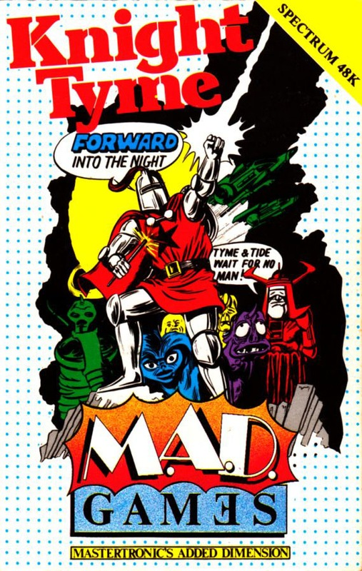
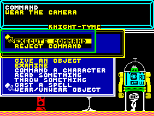
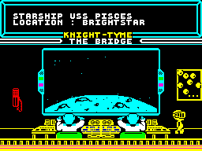

Knight Tyme


{kind=link}

| Publisher: | Mastertronic |
| Price: | £2.99 |
| Year: | 1986 |
| Source: | CRASH, Issue 29 |

And so the saga of the Magic Knight continues, with David Jones’ follow-up to Finders Keepers and Spellbound.
Knight Tyme picks up where Spellbound left off. Having released the wizard Gimbal from a nasty predicament at the end of Spellbound, Magic Knight is free to potter back to 13th Century England and the comforts of home. However, MK is understandably exhausted after his ordeals and his mental concentration is flagging somewhat. In an off moment he miscasts the spell to take him home, and lo and behold, he finds himself transported not to Mediaeval England as he had expected, but onto the deck of an intergalactic star cruiser in the 25th Century.

Magic Knight stands to the right of
the screen while the menu windows overlay
each other as a sequence of commands
is input
The culture shock alone should have been enough to finish off poor old Magic Knight once and for all. He’s a resilient fellow, mind, and he has the good fortune to be presented with a Datacube once he arrives on the space ship which helps him to acclimatise to the newfound surroundings. Datacube or no Datacube, Magic Knight is singularly unimpressed with life on a sophisticated starcruiser and longs for the comforts of home — the odd bout of bubonic plague, rusty armour in the winter and being hungry all the time. He’s understandably anxious to find his way off the Starship USS Pisces.
This is not a simple task. He must find all the pieces of a time machine so he can assemble it and travel to his own time. The Paradox Police are waiting thirty days into MK’s future, so there’s a time limit in the game — if our tin suited hero doesn’t locate the Tyme Guardians and get back into the past quickly enough, he’ll end up in clink. Five Eyed Jack, king of the Space Pirates must also be avoided according to the inlay — he’s a really nasty piece of work. A close watch must also be kept on Magic Knight’s energy and happiness levels, for if they fall too low, he expires.
The first problem to be solved involves getting the human crew members to acknowledge your existence. Officially, Magic Knight is a stow-away, so in order to ingratiate himself with the crew of the USS Pisces he must somehow obtain an identification card — they’re only prepared to hear the voice of officialdom. The droid members of the crew and Derby 4 — the Transputer — aren’t quite as snobby as the human contingent. If you ask them nicely they may even help you get the ID card... This isn’t much use on its own, as it is blank. MK must find a camera and some film and by being creepy to the robots on board, he has to arrange to have his photo taken, and then add the snapshot to the ID card which then confers an ‘authentic’ identification to the wearer. Once this is done Magic Knight can start giving orders to the crew members and begin bossing them about — very satisfying after their early rudeness. When the pilot has been provided with the appropriate equipment, Magic Knight can order him to drive round the galaxy — and a neat space-flight sequence pops onto the Bridge viewscreen during flight.

the USS Pisces studiously ignore the
un-ID’d Magic Knight as they sit on
the Bridge
The player interfaces with the game via an improved version of the user friendly window/menu system that was christened Windowmation in Spellbound. Using either the joystick or keyboard, commands are given by selecting options from a series of nested menus that window onto the screen. A wide range of activities is catered for, including examining objects and characters in the game, giving orders, reading things, calling up status reports and so on. New options appear on the main menu as the game progresses and problems are solved.
The crew of the USS Pisces is an untidy mob — objects litter the decks. Some of these are helpful when it comes to solving the problems buried in the game, while others can be used to barter with the crew of the starcruiser. Magic Knight must somehow locate the mythical Tyme Guardians if he can and, if indeed they even exist, they’ll supply him with his ticket home.
Sixteen separate characters can be found in the game, and there are nearly fifty locations for the USS Pisces to visit. Not all the planets are explorable, but the habitable ones are accessible via the transporter — once it has been fixed. Magic Knight must also get the co-ordinates right on the transporter or else his little tin molecules will be artistically splattered across the cosmos. Most of the parts of the time machine can be found on the planets, and some starbases contain communication centres which provide useful information.
Apart from the problem-solving aspect of the game, there’s a fair old strategic element. It’s vital to keep Magic Knight’s strength up, but the player also needs to monitor the status of the other characters in the game and keep an eye on the condition of the Starship itself.
Don’t forget — if Magic Knight never escapes from the confines of the USS Pisces, there won’t ever be another Magic Knight game...
CRITICISM
“I still play Finders Keepers at home so I was very pleased to play this one. This has to be the most outstanding piece of cheap software I’ve seen since I started reviewing for CRASH, two years ago. Perhaps all 128K software will be like this... but I very much doubt it. I can’t really see myself getting bored with this one for a long time as it is very compelling. The graphics are excellent, all the characters are detailed and well animated and the backgrounds are very colourful. My only gripe is that there is a bit of colour clash. The sound is also excellent: a tune plays throughout the game and there are some spot effects. I strongly recommend this game to all 128 owners — and the 48K version will be a snip as well. You couldn’t hope to find a better piece of budget software.”
“Hooray! The follow up to one of my favourite games of ’85 arrives, and a very good game it is too. The Windowmation is still an excellent piece of programming and adds to the game just as, if not more than the original system. The graphics are very good, and the sound is superb. For £2.95, it’s brilliant value for money. I think Mastertronic had better get lots and lots of copies of this run, ’cause methinks its gonna be a hit.”
“Knight Tyme is the first ‘proper’ game on the 128 and I must say that I was very impressed. I thought the 128K version would just have more locations, but David Jones has certainly made full use of the of the 128K’s features. The game is a very good follow up to the mini-Spectrum games, and combines some old ideas with some new ones. The thing that did impress me was the very olde wurlde music: this suits the game perfectly and doesn’t ask to be turned down as on some games. I still love the way the Knight bounces around and can pester the little innocent creatures that roam around, by asking them to push off or go to sleep. The game again uses the beautiful windowing techniques that were employed in Spellbound. I would say that this game will well satisfy any 128K owner who’s moaning about the 128K software machine, and at the price, ‘you can’t go wrong, John’.”
COMMENTS
| Control keys: | A up/jump, Z down, N left, M right, SPACE fire |
| Joystick: | Kempston, Cursor, Interface 2 |
| Keyboard play: | Responsive |
| Use of colour: | Pretty, and tidily done |
| Graphics: | Cute little characters, nice backgrounds |
| Sound: | Continuous jolly tune |
| Skill levels: | One |
| Screens: | 50 (25 in the 48K version) |
| General rating: | Another excellent arcade adventure from David Jones. Stunningly good value for money. |
| Use of computer: | 90% |
| Graphics: | 89% |
| Playability: | 91% |
| Getting started: | 89% |
| Addictive qualities: | 93% |
| Value for money: | 98% |
| Overall: | 94% |